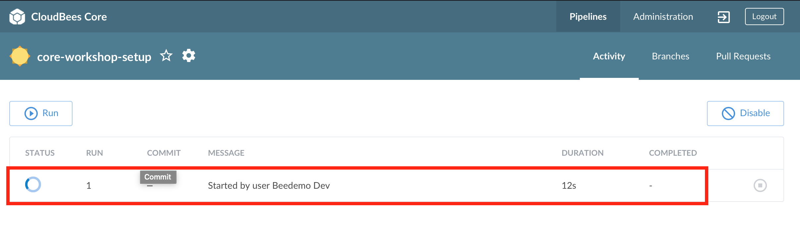

Setup
CloudBees CI Workshop Set-up
In this lab you will setup a work environment for the CloudBees CI workshop. Ask the instructor for the URL of the server you will be using for the CloudBees CI Workshop.
Today’s URL for the CloudBees CI Workshop environment will be provided by your instructor.
Login to CloudBees CI
- Goto to the Workshop URL provided by the instructor.
- Enter the username and password you created earlier into the login screen.

Create a Team (Jenkins instance)
- If not in CloudBees Team UI, click on the Teams link in the left menu.

- Click on the Create team button in the center of your screen.

- Name this team - enter a name for your team - IMPORTANT: to ensure uniqueness, use your GitHub username and then click Next.

- Choose an icon for this team to help uniquely identify your team - select an icon and color for your team and then click Next.
- Add people to this team - your user will show up as a Team Admin and we won’t be adding any additional users right now, but feel free to look around and then click Next.
- Select the cluster endpoint to create the team in - just stick with the default value
kubernetesand click Next. - Select Team creation recipe - click on the drop-down to see the options, but just stick with the Basic recipe.
- Finally, click the Create team button.

- IMPORTANT - While your Core Team (Jenkins instance) is being created (it takes anywhere from 2-3 minutes to provision your Team (Jenkins instance)), move onto the next section.
Create a GitHub.com Account
Feel free to use an existing GitHub.com account, otherwise create one:
- In a new browser tab or window, visit https://github.com/join and fill in the required fields to create a user account.
- Select “Unlimited public repositories for free” when choosing your plan.
- Verify your email account to ensure you account is activated. An activated account will be required for the rest of this workshop.
Create a GitHub Personal Access Token
- Click on this link to automatically select the required Personal access token settings
- Enter a name for your New personal access token (PAT) and notice that all the necessary scopes have already been checked off for you by using the link from above.

- Click on Generate Token button at the bottom of the page.
- As the success message says: Make sure to copy your new personal access token now. You won’t be able to see it again!
Create a GitHub Organization
- On GitHub navigate to Organizations: https://github.com/settings/organizations (after logging in)
- Click on New Organization

- Fill in the Organization Name, Billing Email, and click on Create Organization

- On the Invite organization members - just click the Continue button. On the next page, Enter Organization Details, either click Submit button or skip this step to finish creating the GitHub Organization.
NOTE: Even though you have to provide an email for billing, you will NOT be charged anything as long as you choose the free option.
Run the CloudBees CI Workshop Setup Pipeline
You should see the following Blue Ocean Pipelines screen with a Pipeline named cloudbees-ci-workshop-setup for your Team:

- Click on the
cloudbees-ci-workshop-setupPipeline job. - On the next screen, click on the Run button in the middle of the screen.

- Fill in the required parameters:

- githubPat - the GitHub Personal Access Token you created above.
- The GitHub username/account id you used to create the above GitHub Personal Access Token.
- The name of the GitHub Organization you created above specifically for this workshop
- The Kubernetes Namespace where your Team (Jenkins instance) has been deployed - only change the default value if you are instructed to do so.
- Once you have provided the above required input parameters click the Run button at the bottom of the parameters input form.
- Blue Ocean will automatically switch to the Pipeline Activity screen, click anywhere on the Pipeline run row to see the Pipeline run and view the logs. But make sure you don’t click on the Stop button to the right of the red box in the screenshot below.

- Once the cloudbees-ci-workshop-setup Pipeline job completes successfully your Team (Jenkins instance) will be restarted so you should see a Connect lost: waiting alert in the bottom right of your Blue Ocean screen.

You may also experience a 503 Service Temporarily Unavailable screen - that is because the actual Kubernetes Pod that your Team (Jenkins instance) is running in is being re-created. Your Team (Jenkins instance) will return in a few minutes.
For instructor led workshops please returns to the workshop slides.
Otherwise, you may proceed to the next lab: Configuration as Code (CasC) for CloudBees CI where we will explore your individual fork of the cloudbees-ci-config-bundle repository or choose another lab on the main page.